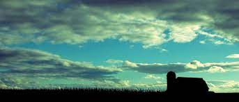

o que é design multimídia?
O design multimídia é um curso que abrange os principais softwares do pacote adobe com o PhotoShop para manipulação de imagens;
Usam illustrator para a criação de logos, e Premiere para a edição de vídeo, Datilografia para terem uma boa digitação;
Criação de cartazes, banners e panfletos;
Canva para coisas mais rápidas;
Também tem a parte de fotografia com duas câmeras sendo uma a Canon T5 e outra a T7.